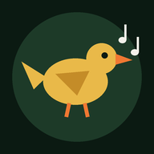

30 oiseaux du monde entier.
Regardez, écoutez, devinez.
Téléchargement des photos et des chants depuis Wikimedia Commons. Restez connecté (Wi-Fi conseillé) jusqu'à la fin.
…
Résultat
Chant indisponible pour cet oiseau.
Photos et enregistrements issus de Wikimedia Commons, sous licences libres. Usage personnel et pédagogique.